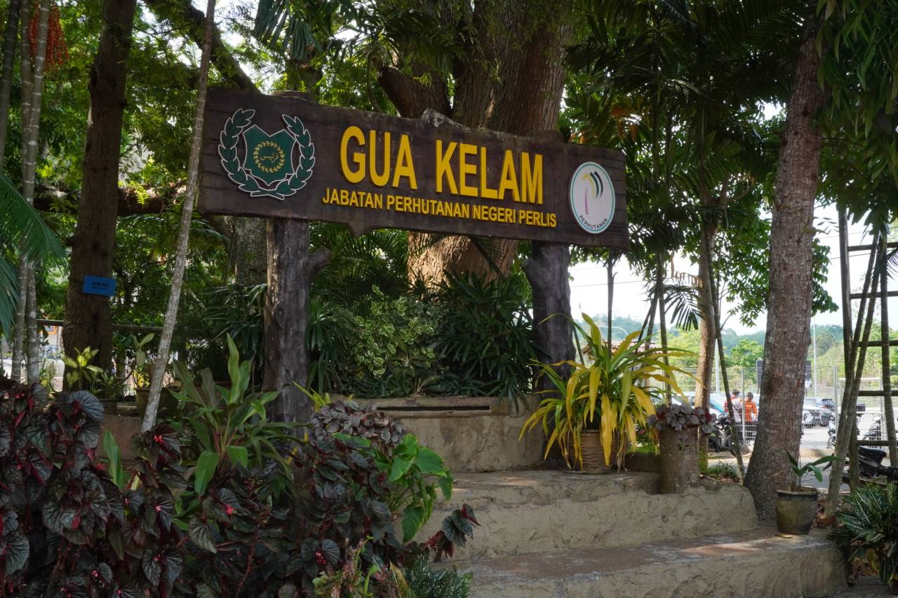

his website provides an overview of Gua Kelam, a renowned natural cave in Perlis, and explores the important role of its workers in preserving the environment and ensuring a safe experience for visitors.
Gua Kelam is a beautiful natural cave filled with history and adventure.
The worker ensures visitors have a safe and enjoyable experience.
The cave is surrounded by greenery and natural beauty.

Gua Kelam is one of the most famous limestone caves in Perlis, Malaysia. It features a long suspension bridge that allows visitors to walk through the cave while enjoying the natural rock formations.
The cave has historical significance as it was once used as a mining route. Today, it is a popular tourist destination known for its scenic beauty, cool environment, and peaceful nature.